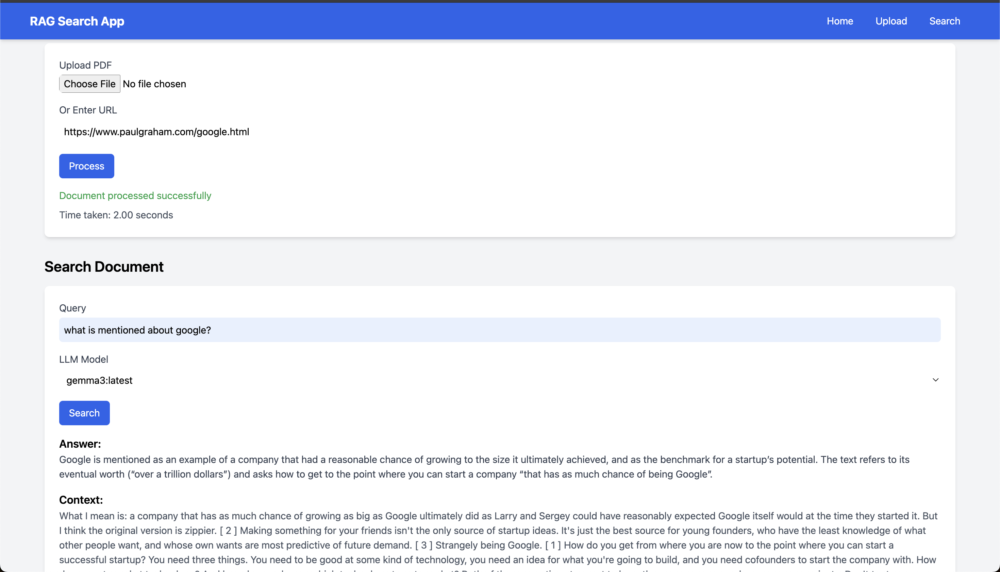

RAG Search App
A powerful Retrieval-Augmented Generation (RAG) application for processing PDFs or URLs and answering queries using local LLMs with pgvector and Ollama.
Features
Document Processing
Upload PDFs or provide URLs to extract text, chunk it, and store embeddings in PostgreSQL with pgvector.
RAG Search
Query documents using Retrieval-Augmented Generation with local LLMs, retrieving relevant context and generating answers.
Dynamic LLM Selection
Choose from locally available Ollama models (e.g., Gemma, TinyLlama) for query answering.
Performance Metrics
View processing and query response times with a user-friendly interface and loading spinners.
See It in Action
Setup Instructions
Follow these steps to set up the RAG Search App locally. The backend server code is available at mohan-chinnappan-n5.github.io/pg/rag/app.py.
🔹 Step 1: Get Server Code
curl -O https://mohan-chinnappan-n5.github.io/pg/rag/app.py 🔹 Step 2: Install Python Dependencies
Install the required Python packages using pip:
pip install flask flask-cors psycopg2-binary pgvector PyPDF2 requests beautifulsoup4 numpy ollama🔹 Step 3: Set Up PostgreSQL and pgvector
Install and configure PostgreSQL with the pgvector extension. Choose the instructions for your operating system:
For macOS
- Install Homebrew (if not already installed):
/bin/bash -c "$(curl -fsSL https://raw.githubusercontent.com/Homebrew/install/HEAD/install.sh)" - Install PostgreSQL using Homebrew:
brew install postgresql@15 - Start the PostgreSQL service:
brew services start postgresql@15 - Create a database (e.g.,
postgres):createdb postgres - Install the pgvector extension:
- Clone and build pgvector:
git clone https://github.com/pgvector/pgvector.git cd pgvector make sudo make install - Connect to the database:
psql -d postgres - Enable the vector extension:
CREATE EXTENSION vector; - Verify the extension is installed:
\dxLook for
vectorin the output.
- Clone and build pgvector:
For Ubuntu
- Install PostgreSQL (version 12 or later recommended):
sudo apt update sudo apt install postgresql postgresql-contrib - Start the PostgreSQL service:
sudo service postgresql start - Create a database (e.g.,
postgres):sudo -u postgres psql -c "CREATE DATABASE postgres;" - Install the pgvector extension:
- Clone and build pgvector:
git clone https://github.com/pgvector/pgvector.git cd pgvector make sudo make install - Connect to the database:
psql -U postgres -d postgres - Enable the vector extension:
CREATE EXTENSION vector; - Verify the extension is installed:
\dxLook for
vector metallurgy://vector` in the output.
- Clone and build pgvector:
- Update the database connection details in
app.py(e.g.,dbname,user,password):conn = psycopg2.connect( dbname="postgres", user="postgres", password="your_password", host="localhost", port="5432" )
Alternatively, use a Docker image with pgvector pre-installed (works on both macOS and Ubuntu):
docker run -d --name postgres -p 5432:5432 pgvector/pgvector:0.8.0-pg15🔹 Step 4: Set Up Ollama
Install Ollama and pull required models:
- Install Ollama following the instructions at ollama.ai.
- Pull models (e.g., Gemma, TinyLlama, and nomic-embed-text):
ollama pull gemma3 ollama pull deepseek-r1:1.5b ollama pull tinyllama ollama pull nomic-embed-text - Start the Ollama server:
ollama serve
🔹 Step 5: Run the Backend
Start the Flask server using the backend code at app.py:
python app.pyThe server runs on http://localhost:5000.
How to Use
Follow these steps to use the RAG Search App:
🔹 Step 1: Access the App
Open the app in your browser at RAG App
🔹 Step 2: Upload a Document or URL
In the "Upload Document or URL" section, upload a PDF file or enter a URL (e.g., https://www.paulgraham.com/google.html). Click "Process" to extract text and store embeddings in PostgreSQL.
A spinner will appear during processing, and the time taken will be displayed (e.g., "Time taken: 2.34 seconds").
🔹 Step 3: Search the Document
In the "Search Document" section, enter a query (e.g., "what is mentioned about google?") and select an LLM model from the dropdown (populated dynamically from Ollama, e.g., gemma3:latest). Click "Search" to retrieve answers.
A spinner will show during the query, and the response will include the answer, context, and time taken.